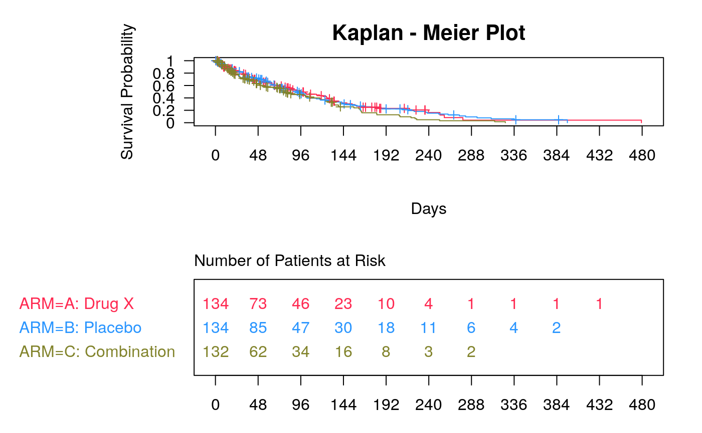
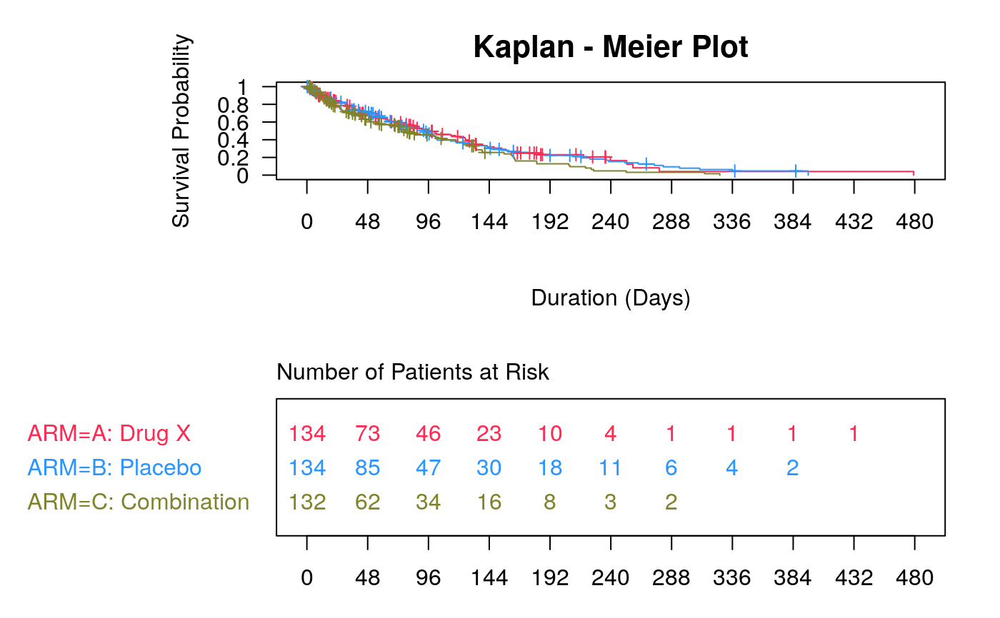

Kaplan-Meier Plot
g_km.RdCreate a KM plot for any survfit object.
g_km( fit_km, xticks = NULL, col = NA, lty = 1, lwd = 1, censor_show = TRUE, pch = 3, size = unit(0.5, "char"), max_time = NULL, title = "Kaplan - Meier Plot", xlab = "Days", ylab = "Survival Probability", draw = TRUE, newpage = TRUE, gp = NULL, vp = NULL, name = NULL )
Arguments
| fit_km | ( |
|---|---|
| xticks | numeric vector of xticks, single number with spacing
between ticks or |
| col | ( |
| lty | ( |
| lwd | ( |
| censor_show | ( |
| pch | ( |
| size | ( |
| max_time | ( |
| title | ( |
| xlab | ( |
| ylab | ( |
| draw | ( |
| newpage | ( |
| gp | (abject of class |
| vp | a grid |
| name | ( |
Examples
library(random.cdisc.data) library(dplyr) ADSL <- cadsl levels(ADSL$RACE) <- strtrim(levels(ADSL$RACE), 10) ADTTE <- cadtte ADTTE_f <- subset(ADTTE, PARAMCD == "OS") formula <- Surv(AVAL, 1 - CNSR) ~ ARM fit_km <- survfit(formula, data = ADTTE_f, conf.type = "plain") g_km(fit_km = fit_km)plot(fit_km)p <- g_km(fit_km = fit_km, col = c("black", "red", "blue"), lty = c(1, 2, 3), draw = FALSE) g_tkm <- textGrob( label = toString(t_km(formula, data = ADTTE_f), gap = 1), x = unit(1, "npc") - unit(2, "lines"), y = unit(1, "npc") - unit(2, "lines"), just = c("right", "top"), gp = gpar(fontfamily = "mono", fontsize = 8, fontface = "bold") ) p_t <- addGrob(p, gTree(children = gList(g_tkm), vp = vpPath("mainPlot", "kmCurve", "curvePlot"))) grid.newpage() grid.draw(p_t)g_km(fit_km, xlab = "Duration (Days)")